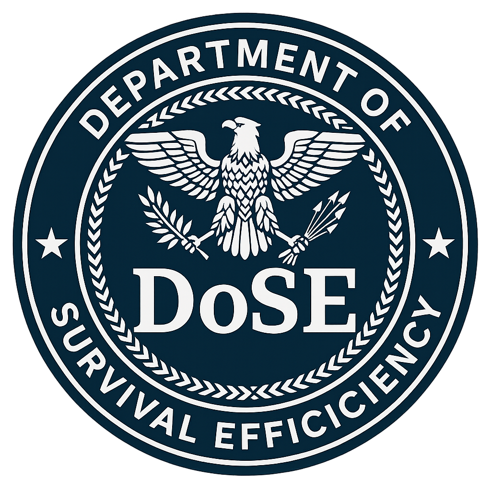

Cyber Hygiene Briefing
📌 Digital Habits That Prevent Exploitation
- âš ï¸ Do not plug in unknown USB drives, NFC tags, or scan random QR codes.
- 🔠Use unique, complex passwords. Recommended: Bitwarden.
- 🔄 Always enable Two-Factor Authentication (2FA).
- 🧼 Apply OS & software updates regularly to patch known vulnerabilities.
- 🌠Use a secure VPN on public networks. Avoid public Wi-Fi for sensitive tasks.
- 👁️ Audit your digital identity. Google yourself. Remove what you don't trust.
- 🧯 Backup critical data — encrypted, both local and offsite.
🧰 White-Hat Defense Tools (Approved Recon)
- ğŸ› ï¸ Kali Linux – Offensive security OS: kali.org
- 🔠Nmap – Port scanner / device mapper: nmap.org
- 🧬 Wireshark – Real-time packet analysis: wireshark.org
- 🧠Metasploit – Framework for penetration testing: metasploit.com
- 🛡️ ClamAV – Lightweight open-source antivirus: clamav.net
- 📦 VirusTotal – Threat scanner for files/URLs: virustotal.com
- 🧩 DuckDuckGo – Private search engine: duckduckgo.com
📚 Advanced Training & Ongoing Intel